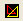
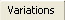
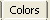
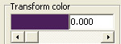
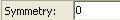

Start Apophysis. The Main Window will come up. It looks like the image above.
Open the Transform Editor by clicking on the Transform Editor button.  .
Select the New Blank Flame button in the upper left-hand corner of the Transform Editor. This will get rid of the current fractal and reset all of the current fractal settings. This means that Apophysis will delete all of the transforms except for one. (The transforms are the triangles you see in the editor, and they control the shape of the fractal). It will also put the remaining transform on the reference triangle. (The reference triangle is the faded gray triangle in the middle of the screen that doesn't move. You can't see it after you hit New Blank Flame because the red triangle is covering it). In the variations tab  it will set that transform's variations to linear with a value of 1 . In the Colors tab  ,it sets the color slider  all the way to the left and gets rid of any symmetry  . Basically, hitting New Blank Flame sets the flame to neutral. (In Apophysis, a fractal is called a 'fractal flame' or 'flame' for short.)
Now is a good time to learn how to move around the main window of the transform editor. First, right-click in any black area that does not have a triangle, and hold. Your screen will look like the one below. The move icon will appear . Start dragging. This will allow you to reset the triangle wherever you want.
If you want to zoom in and out on your workspace, you can do one of three things. First, you can scroll the middle mouse button if you have one. Scrolling up zooms in, and scrolling down zooms out. You can also use the - key or the + key. Pressing the + key zooms in, and pressing the - key zooms out. Finally, you can use a menu. Go to your workspace and right-click on an area that has no triangles, as shown below. Scroll down and choose the autozoom option. This will make sure that every triangle you have is visible in your workspace.